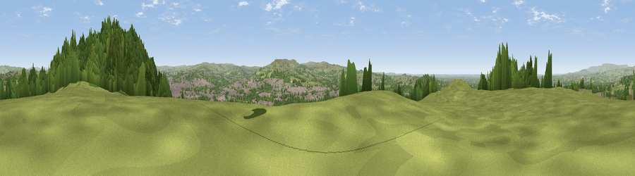

Viewpoint near Pleasington
#5519 in England · top 9% of its area beats it · near PleasingtonWhere it is
The exact computed spot (SD 65175 27975). Click the marker for map links.
The view, rendered

A 360° render of this exact spot computed from the terrain model, tree cover and land cover — summer colours, afternoon light, calibrated against photographs of famous viewpoints. Real trees, hedges and buildings will differ in detail.
The panorama
Grey silhouette: terrain skyline in each direction (720 bearings, Earth curvature and refraction included). Dashed green: skyline with trees (+15 m) and buildings (+8 m) as obstacles. Blue strip: how far the ground is visible on each bearing.
Where the view opens
Wedge length = distance to the farthest visible ground on that bearing (vegetation-aware). Rings at 10, 25 and 50 km.
What fills the view
44% grassland · 37% woodland · 17% built-up · 1% cropland
Angular shares of the visible panorama (visual magnitude), not map area. Landscape diversity 0.48 (0–1 Shannon).
Key numbers
More beautiful places nearby
The staircase of upgrades: each row has a higher view potential than everything closer. Driving times are estimates from straight-line distance, calibrated against real road routing — check an actual route before setting out.
| Place | Direction | Drive | Score |
|---|---|---|---|
| Viewpoint near Pleasington | ENE · 1 km | ~2 min | 74.8 |
| Darwen Hill | SSE · 7 km | ~14 min | 80.7 |
| Rivington Pike | S · 14 km | ~26 min | 81.9 |
| White Brow | S · 16 km | ~28 min | 82.9 |
| Warton Crag | NNW · 48 km | ~68 min | 83.2 |
| Viewpoint near Grange-over-Sands | NNW · 56 km | ~78 min | 83.4 |
| Viewpoint near Cartmel | NNW · 59 km | ~81 min | 87.0 |
| Viewpoint near Cartmel | NNW · 59 km | ~82 min | 87.2 |
53.74698, -2.52955 · source: screening · position refined by local search. Computed location — check access rights before visiting.